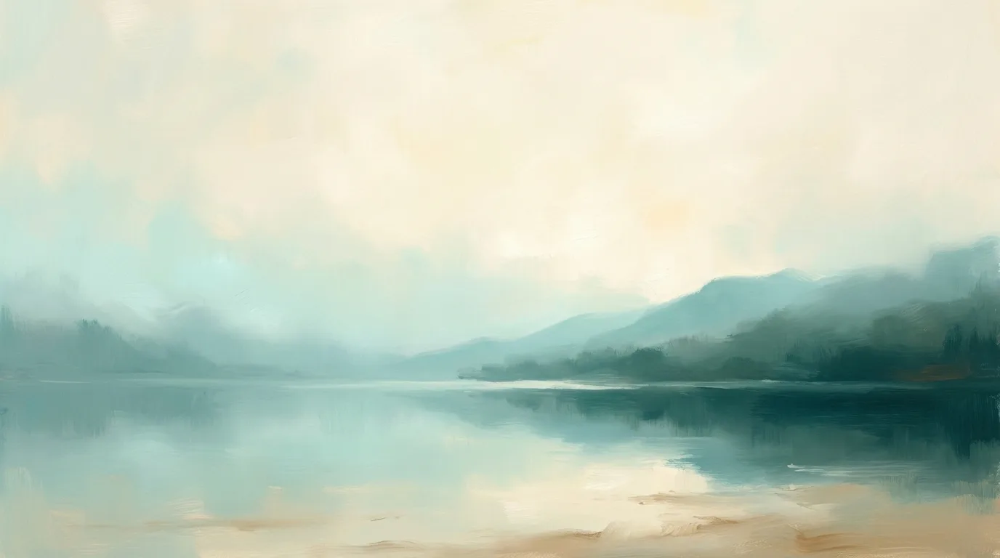
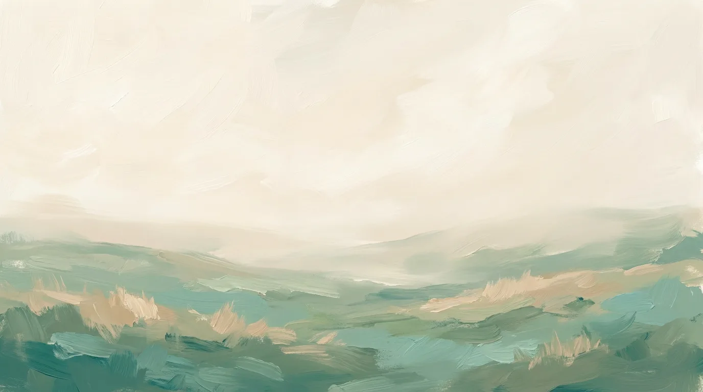
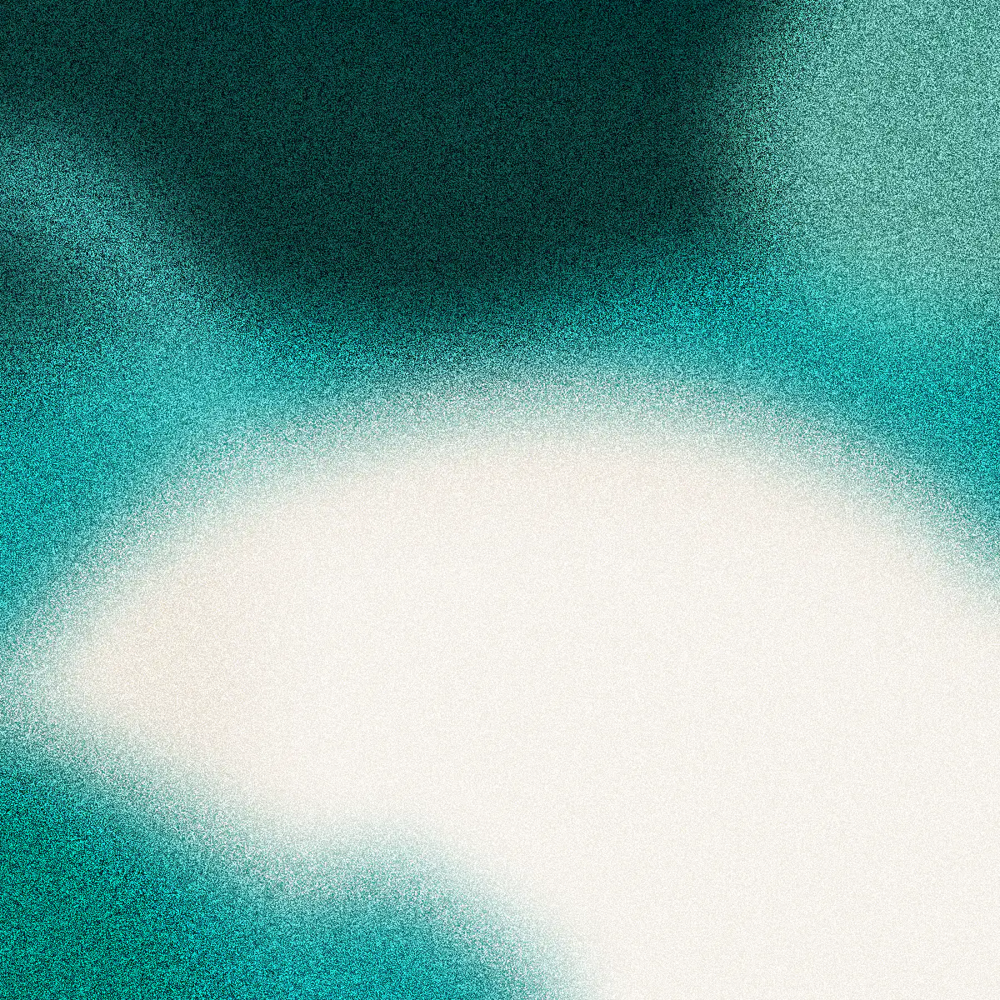

La placa de la landing traducida a vertical. En la web el texto va al lado del panel y las secciones zigzaguean; en 4:5 no hay zigzag: el panel arriba y la copia debajo, siempre. La ventana lleva captura real, igual que en la línea actual. El rayado es maqueta: si llega a revisión, la lámina no está terminada.
Arte nítido

Le dices qué quitar o qué añadir y lo aplica. Nada se toca sin que lo confirmes.
Pruébalo sin instalar nada →
Arte difuminado (lavado de color)

Colores, tipografía y tu logo. Quien lo abre ve tu negocio desde el primer clic.
Aplica tu marca →
Placa sobre esquema oscuro

Pregunta en lugar de configurar. Te resume qué se repite y qué conviene hacer.
Explora las respuestas →